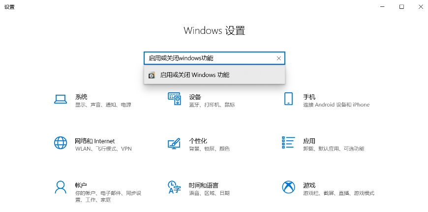
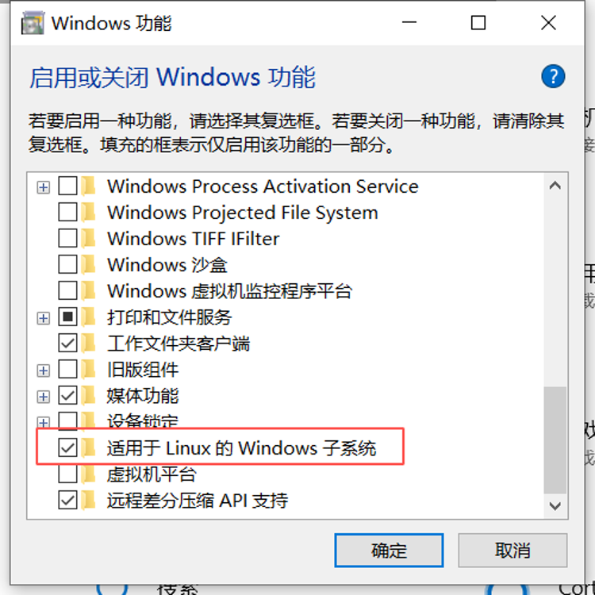
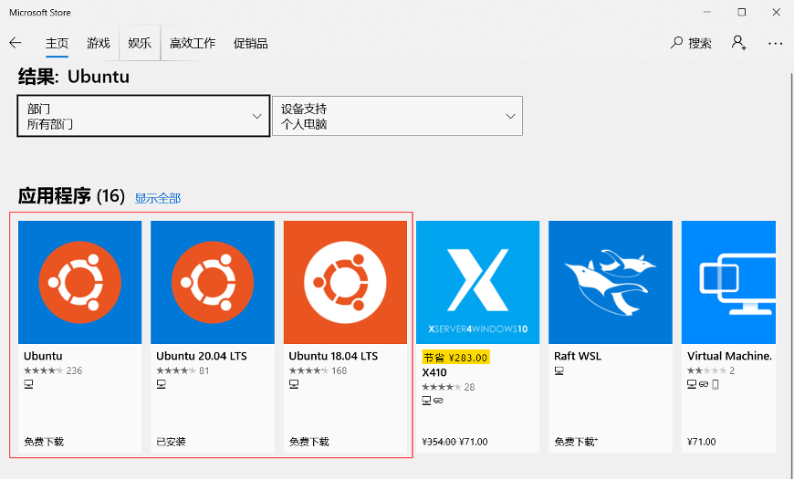
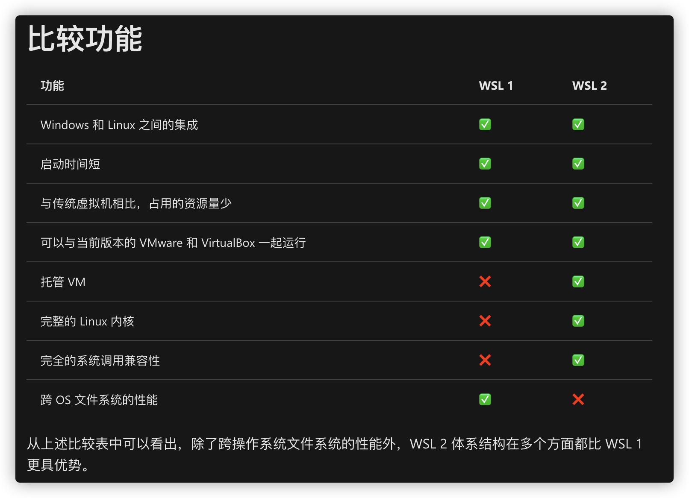
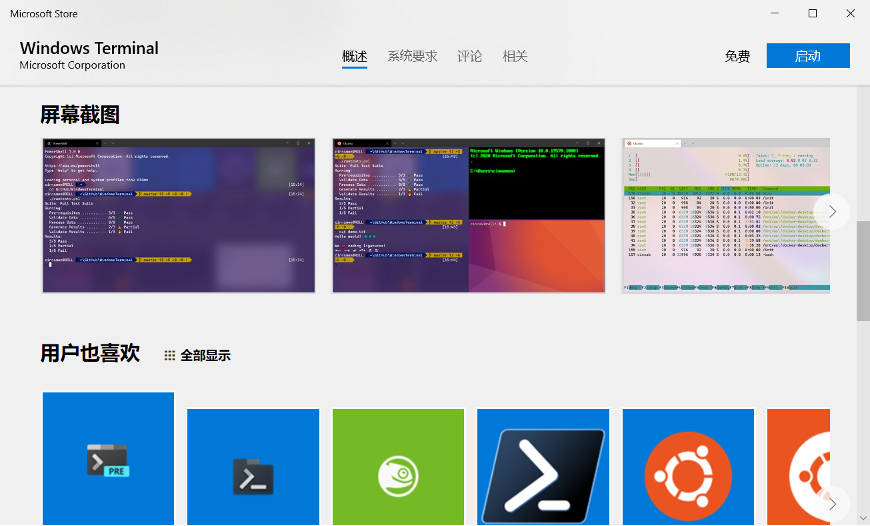

基于WSL2搭建Win10开发环境
距离微软发布 Windows Subsystem for Linux (WSL) 有好一段时间了，也一直没想到什么场景下能够用到这个子系统。最近给新电脑 Win10 系统搭建开发环境的时候，感觉好多开发软件不是特别顺手。猛然间想起了还有子系统，随即尝试了一下。作为开发环境没有什么问题的，下面把基本过程记录一下。
适用于 Linux 的 Windows 子系统可让开发人员按原样运行 GNU/Linux 环境 - 包括大多数命令行工具、实用工具和应用程序 - 且不会产生传统虚拟机或双启动设置开销。
什么是适用于 Linux 的 Windows 子系统 | Microsoft Docs
使用WSL有以下一些优点：
- 外壳系统还是 Windows，但是可以运行 Linux 的一些命令
- 可以使用 Linux 的包管理，使用 Linux 的软件和调试环境
- 开发环境可以借助 VSCode 和 Intellij IDEA 访问 WSL 中的代码
安装WSL
官方提供了安装WSL的教程在 Windows 10 上安装 WSL | Microsoft Docs。重新总结一下安装步骤：
- 更新 Win10 系统
- 在Windows设置里搜索【启动或关闭Windows功能】

- 找到其中的【适用于 Linux 的 Windows 子系统】选中，点【确定】，等待安装重启

- 在Windows Store商店里安装Ubuntu发行版

商店里也有CentOS的发行版，但是需要花钱。。。
- 在终端（命令提示符 或 PowerShell）中输入bash就可以启动WSL了。之后就可以像是用 Linux 一样用这个系统了。
更新到 WSL2
如果只是使用 WSL1 ，那么以上步骤就足够了。这里强烈建议更新到 WSL2 以获取更好的性能支持和更优秀的文件变更监控特性。
关于一代和二代的区别，可以参考这篇文章比较 WSL 1 和 WSL 2 | Microsoft Docs

在开始更新之前，先要保证系统版本满足需要的最低版本，建议更新一下系统。除了通过系统版本号判断是否能够安装 WSL2 外，还可以通过命令简单的判断。
输入：wsl --help
根据命令反馈的帮助信息里有没有包含相应的选项（例如--set-default-version）来判断是否可以升级 WSL2。
以下步骤按照文章 在 Windows 10 上安装 WSL | Microsoft Docs 进行操作。
- 启动虚拟化功能，在Powershell的管理员模式（右键开始菜单按钮，选择【Windows PowerShell（管理员）】）下执行：
1 | dism.exe /online /enable-feature /featurename:VirtualMachinePlatform /all /norestart |
-
下载 Linux 内核更新包进行安装，适用于 x64 计算机的 WSL2 Linux 内核更新包
-
打开 PowerShell，输入以下命令将WSL默认版本切换到WSL2
1 | wsl --set-default-version 2 |
- 转换已经创建的 WSL 到 WSL2
1 | 查看当前已经存在的发行版 |
安装Windows Terminal（可选）
Windows发布了一个命令行终端，可以尝试一下。
在 Github 的 release 页面或者 Windows 系统的 Microsoft Store 可以下载安装。

配置Node开发环境
直接上教程，按照说明操作一遍即可在 WSL 2 上设置 NodeJS | Microsoft Docs。
VSCode 需要安装 Remote - WSL 插件才能打开存储在 WSL 中的项目。IDEA 可以直接打开 WSL 中的项目。